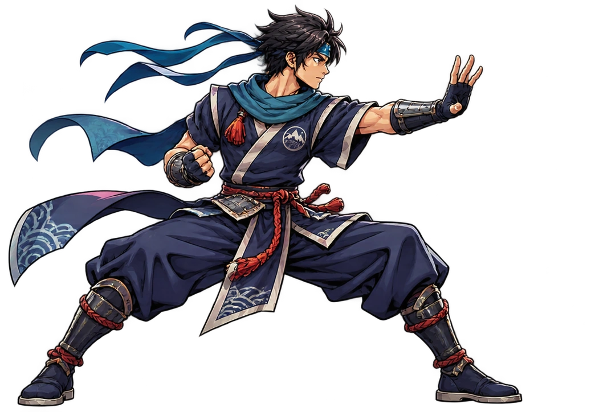

⚔Sensei's English Lab Word Formation Dojo · Samurai Training
⛩️ B1 · B2 · FULL FORM TRAINING
⛩ The path of the word samurai
Sharpen your words. Build your streak.
Train your English with focused challenges, helpful clues and word-family study breaks. Choose your path and rise through the dojo ranks!
✦ FIND THE FORM • MASTER THE MEANING • LEVEL UP
01 Step 1 · Choose your path
02 Step 2 · Choose your vocabulary
Choose B1, B2 or both. Tick the word families you want to practise, or let the Dojo select them for you.
📚 Choose your words · alphabetical list All words
Classic Mix covers all selected families. Family Ladder uses only families with five different contextual questions; other families will gain ladders in future updates.
03 Step 3 · What types of word forms would you like to practise?
Everything is selected by default. Untick forms that you do not want in your exercises.
A form may belong to more than one grammatical category (for example, an -ing adjective). The classification uses the exercise metadata.
04 Step 4 · How would you like to answer?
05 Step 5 · How many challenges?
Choose how many correct answers you want to earn. Start with 5 or challenge yourself with 30.
Advanced practice choices — Optional
One per family: one exercise for every selected base word. One per word form: each distinct available answer is practised once. All records: also practises forms with more than one grammatical role. Family Ladder focuses on transformations within a family. Family Ladder focuses on five transformations within one family.
06 Step 6 · Choose your training
A mistake means your first answer was wrong, even if you correct it with hints. Earn the number of correct first-attempt answers chosen in Step 5. Correct recovery challenges count as progress too. After the mistake allowance is exceeded, your score restarts, but you keep learning.
When I make a mistake…
⚔ Your training scroll
Classic Mix · B1 + B2 · Type the word · 10 questions
Read the context, change the word in brackets, and sharpen your skills!
📖 Study Word Families
Choose a source bank, search alphabetically and tap a family to see its word forms. B1/B2 here means the game's source banks, not a confirmed individual CEFR level for every form.
Select a word family
Open a family on the left to begin studying.
📖 Word-family warm-up
Nouns, verbs, adjectives, adverbs and other forms appear in compact lines. Hover, tap or focus a word for its meaning; useful expressions are listed separately.
📖 Word Bank & Recall Training
Browse your selected B1/B2 word families and practise their spelling. These forms support the game and your independent revision.
Vocabulary pool
Words are grouped into approved study families and grammatical categories; some related words belong to different derivational branches. A dot (·) separates individual forms; click or hover over a word to see a short definition where available. Official exam answers and teacher-expanded forms are kept distinct.
In this activity, you study a form, hide it, then type it from memory. It tests recall and spelling, not the three-sentence grammar questions. The source bank contains some unreviewed teaching extensions.
Tip: words with a dictionary definition show it here when selected.
🥷 Ninja HP4 HP🐉 Mizoryo attacks at 0 HP or at the training goal
Question 1 / 10
🥋 0 families mastered0 / 10 first-try wins
Complete the missing word · 3-sentence context
✍️ Your turn: type the correct word yourself.
Writing it helps you remember it. Then we'll study its word family.
Round complete
Nice work!
0XP
0Best streak
V6_8 · Motion Upgrade Edition · No login required · 51 B1 + 51 B2 labelled family entries · Original practice questions · Source labels retained
⛩ Welcome to the Word Formation Dojo
✦ ✧ ✦ ✧ ✦

Your Sensei
3 🔥
Keep your momentum going!
⚡ ⭐ ⚡
🌟 Halfway challenge!
Try the riddle below or choose arrow memory. Solve a challenge to earn one 🛡️ Magic Shield for the final dragon attack, even if your streak is currently zero.
📜 The word scroll · take a moment to study
📚 Word family
Read these forms. Notice the endings and how the meaning changes.
10seconds
Timer runs until you pause it.
🔍 Hover over a word (or tap it) to see its meaning. After your review, additional same-family practice will follow when more questions are available.
⬡
MAGIC SHIELD UNLOCKED!
You solved the bonus challenge. Claim your Magic Shield. It works ONLY against Mizoryo’s final dragon attack, never against normal mistakes.